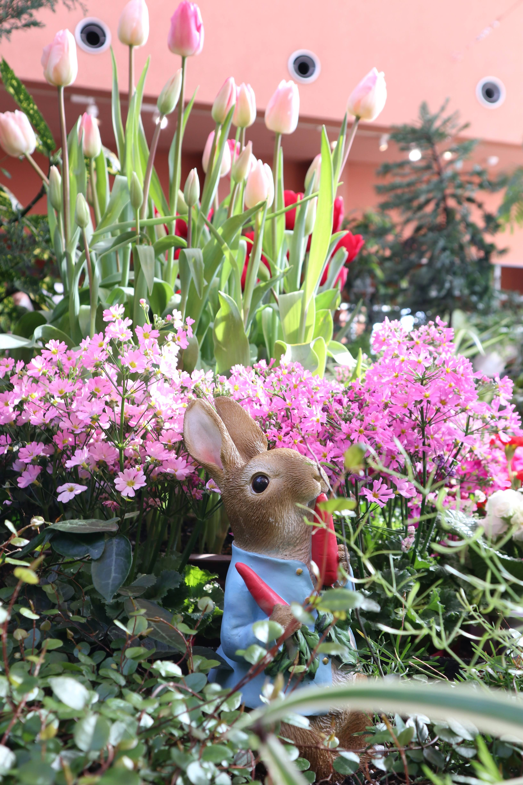
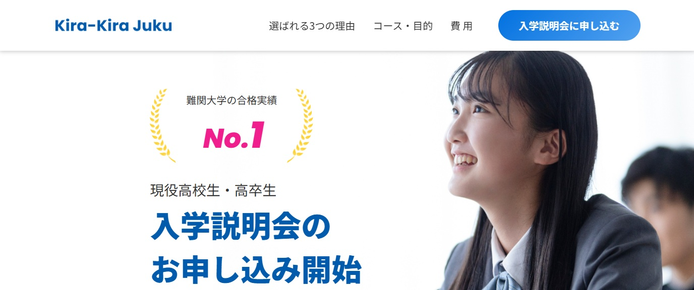
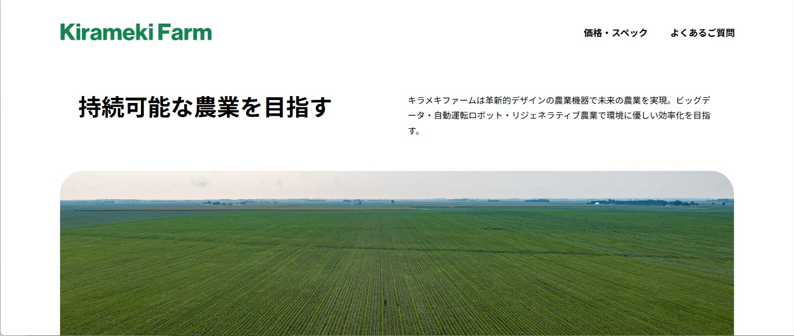
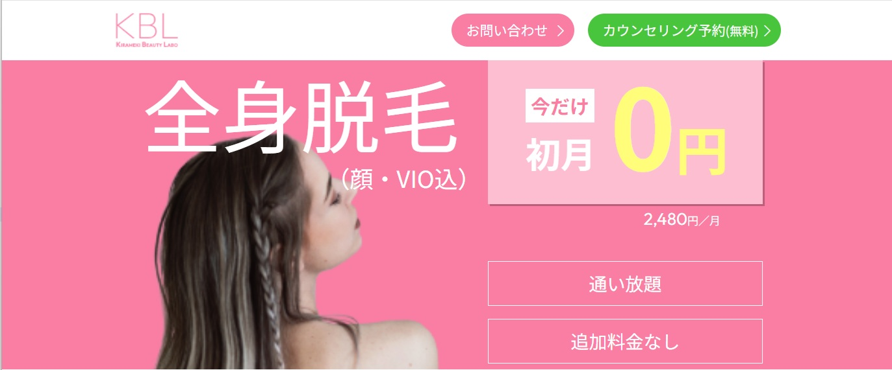

morita176
ITエンジニアとして勤務しながら、副業でWeb制作・ライティングに取り組んでいます。
TechAcademy Web制作コースを修了しました。
インフラエンジニアとしての経験を活かし、運用や保守も意識したWeb制作を心がけています。
また、日常をテーマにした記事の執筆にも取り組んでいます。
About Me
富山県富山市在住。現在はSEとして勤務しています。
これまで約5年間、クラウド環境の運用・保守業務に携わってきました。
Web制作では、HTML・CSS・JavaScript・Sassなどを使用したコーディングに取り組んでいます。
インフラエンジニアとしての経験を活かし、「作って終わり」ではなく、運用や保守まで意識したWeb制作を心がけています。
また、ライティングにも力を入れています。
日常の出来事をテーマにしたエッセイを中心に、読者に楽しんでもらえる文章を意識して執筆しています。
Skills
Web制作
- HTML / CSS / JavaScript
- レスポンシブ対応
- デザインカンプからのHTML / CSSコーディング
クラウド・インフラ基礎知識
- クラウド環境の運用・保守経験（約5年）
- Azure：基本設計・詳細設計作成・構築経験あり
- AWS：資格取得済み（設計思想・構成理解レベル）
※副業案件ではWeb制作、ライター業務を中心に対応しています。
取得済み資格
- AZ-900
- AZ-104
- AWS Certified Cloud Practitioner
- AWS Certified Solutions Architect – Associate
- AWS Certified Security – Specialty
- LPIC-1
- 基本情報技術者試験
対応可能な業務
- デザインカンプからのHTML / CSSコーディング
- 既存サイトの修正（テキスト・画像差し替えなど）
- レスポンシブ対応
- LPコーディング
- ライティング
- 旅行・体験談記事
Works
LPコーディング
（TechAcademy課題1）

- 制作時間
- 27.5時間
- 制作範囲
- フロントエンド実装（デザインカンプからのコーディング）
- 使用技術
- HTML / CSS / JavaScript
LPコーディング
（TechAcademy課題2）
- 制作時間
- 16.5時間
- 制作範囲
- フロントエンド実装（デザインカンプからのコーディング）
- 使用技術
- HTML / CSS / JavaScript
LPコーディング
（TechAcademy課題3）

- 制作時間
- 20.5時間
- 制作範囲
- フロントエンド実装（デザインカンプからのコーディング）
- 使用技術
- HTML / CSS / JavaScript
企業サイトコーディング
（TechAcademy課題4）

- 制作時間
- 7日間（23.5時間）
- 制作範囲
- フロントエンド実装（デザインカンプからのコーディング）
- 使用技術
- HTML / CSS / JavaScript
AI画像生成案件
- 制作時間
- 2時間
- ツール
- SeaArt
- 実績
- クライアントより★5評価を獲得
Writing
Webコーディングだけでなく、体験談やエッセイ形式のライティングにも挑戦しています。
旅行や日常の出来事を、読みやすく親しみやすい文章で伝えることを心掛けています。
実際のサイトなど、制作実績については、守秘義務および利用規約の関係上、限定公開にてご案内しております。
ご興味をお持ちいただけましたら、お問い合わせよりご連絡ください。